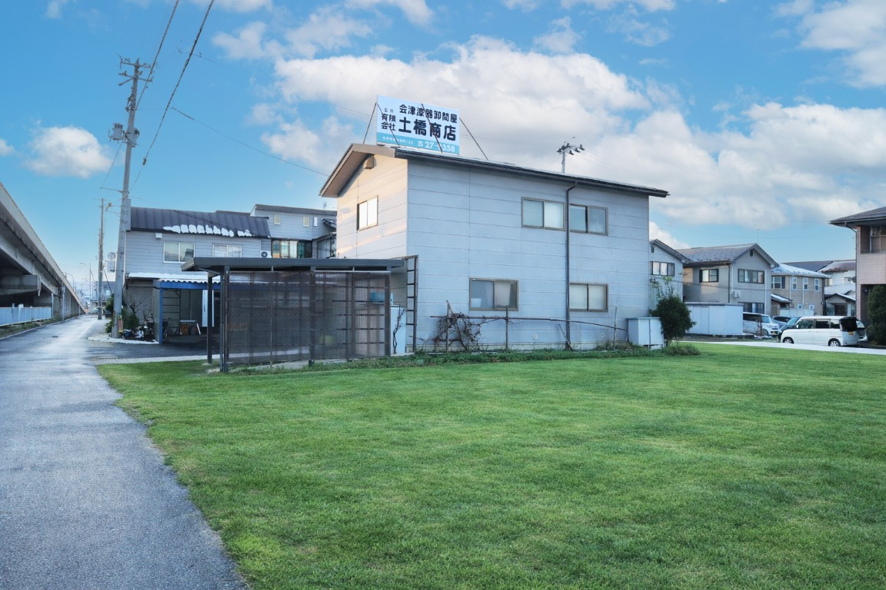
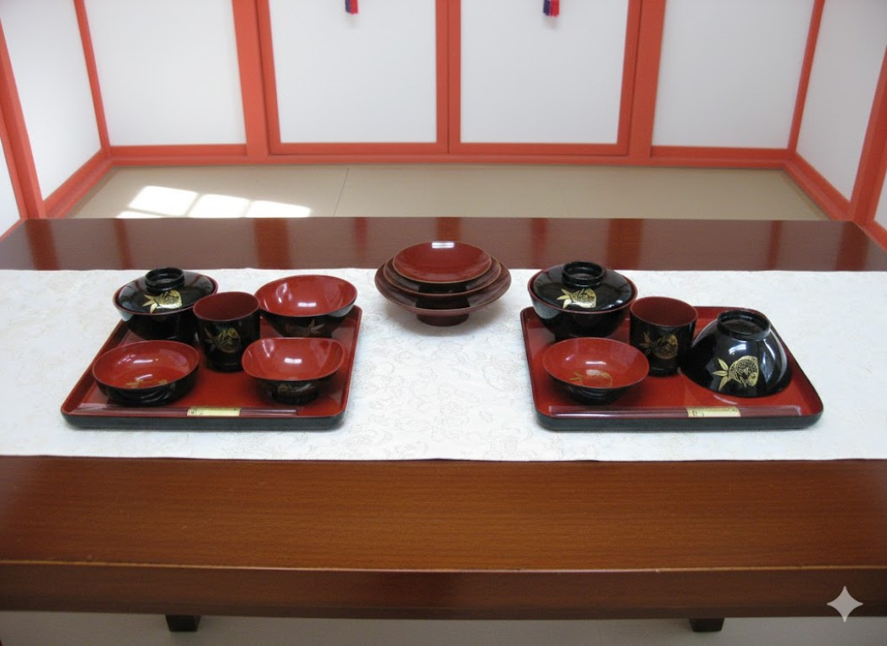
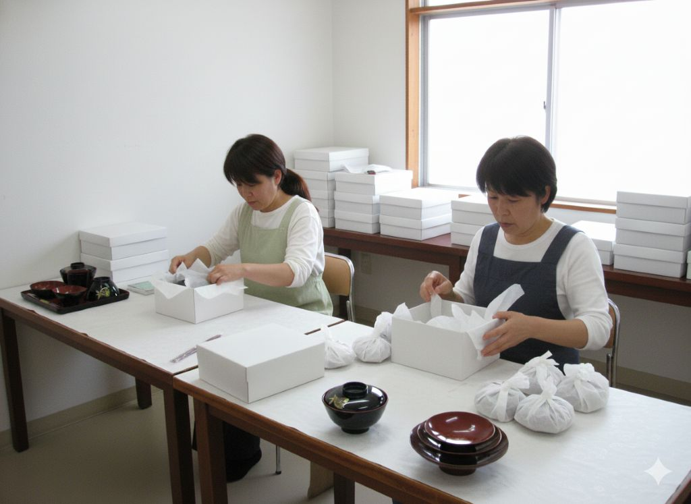
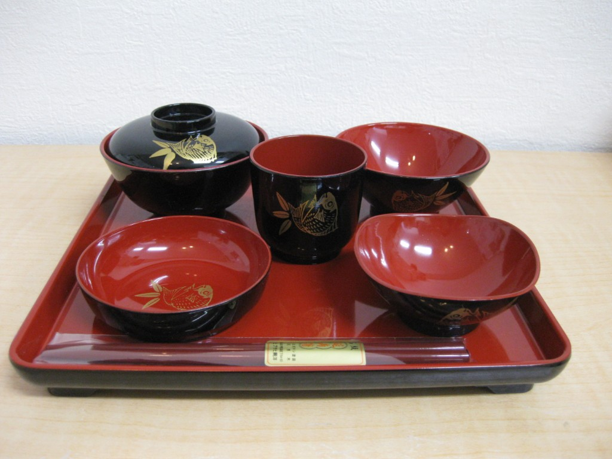
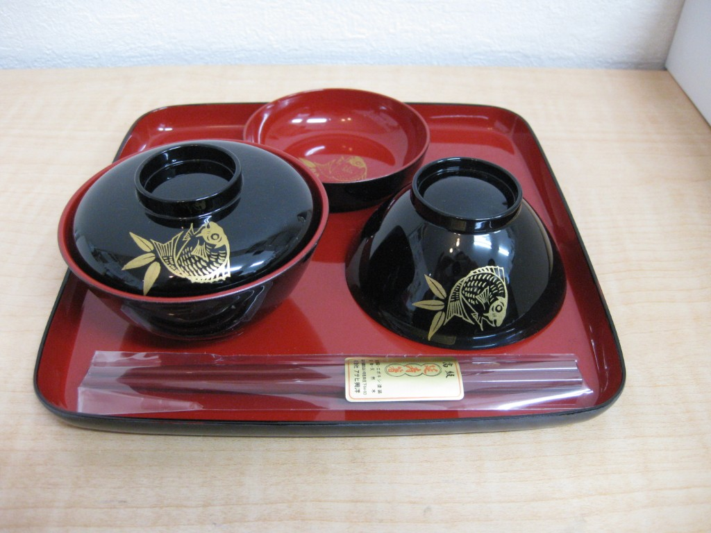
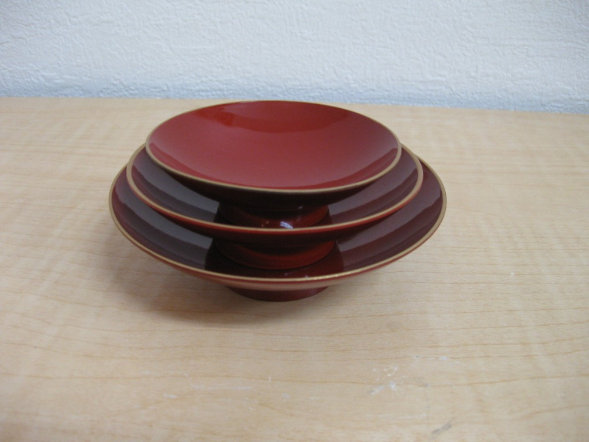
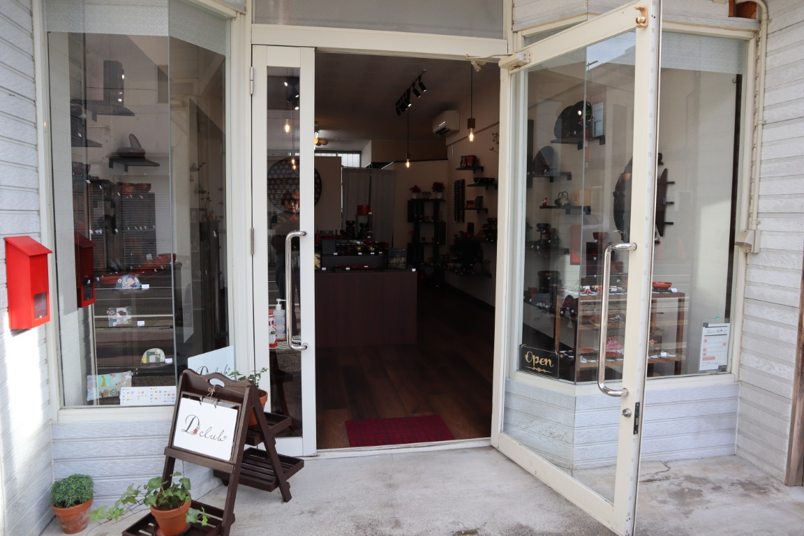

昭和45年
土橋兵造が○○会社を退社し、独立。
独立当初から、お食い初めセットの取り扱いを開始。
昭和○○年
昭和城西町から桜町に移転
昭和○○年
倉庫増設
昭和○○年
神社との直接取引を開始。
令和6年
直営店 Dclubをオープン
人生の節目に寄り添う、会津漆器。



土橋商店は創業より50年近く続く漆器問屋です。
主に、神社向け神事に用いるお食い初めセットや三組盃などの会津漆器を全国の神社に向けて販売しております。金型を自社で保有しており、職人の分業により、品質が高い。
神社独自の紋章を、職人が一つ一つ手作りでお入れしたものをお届けしています。


生後百日を迎えるお子さまの健やかな成長を願う「お食い初め」の儀式に用いられる、会津漆器のお食い初めセットです。
朱と黒を基調とした落ち着きのある色合いに、祝いの席にふさわしい意匠を施しています。
お椀・鉢・杯など、儀式に必要な器を一式揃えており、伝統的な作法に沿って安心してお使いいただけます。
会津漆器ならではの軽さと手触りの良さ、耐久性を備え、儀式後も記念の品として長く大切にしていただけます。
人生の節目を迎える大切な一日に、心を込めてお使いいただきたい漆器セットです。

祝儀の場で用いられる、会津漆器の三組盃です。
大・中・小の三枚の盃を重ねた形は、古くから続く作法に基づくもので、儀式の場にふさわしい端正な佇まいを備えています。
朱塗りならではの落ち着いた色合いと、漆器特有の艶が、お神酒を供する所作を美しく引き立てます。
会津漆器の技法を活かし、軽さと扱いやすさ、耐久性にも配慮した仕上がりです。
神前でのご使用はもちろん、長く受け継がれる儀式用漆器として安心してお使いいただけます。

土橋商店が手がける直営店です。
会津漆器を中心に、日々の暮らしで使いやすい器や、手仕事の温もりを感じられる品々を取り揃えています。
実際に手に取り、質感や使い心地を確かめながら、漆器のある暮らしを身近に感じていただける空間を目指しています。
Dclubサイトへ| 会社名 | 有限会社土橋商店 |
|---|---|
| 資本金 | ○○円 |
| 従業員数 | ○名 |
| 代表者 | 土橋 兵造 |
| 設立年月日 | 昭和45年〇月〇日 |
| 本店所在地 | 〒965-0854 会津若松市桜町133番地 |
| 電話番号 | 0242-27-9358 |
| FAX番号 | 0242-27-4930 |
| メールアドレス | info@dobashi-shoten.co.jp |
| 営業時間 | 9:00 - 17:00 |
| 定休日 | 土曜・日曜・祝日 |
| 加盟団体 | 会津商工会 |
土橋兵造が○○会社を退社し、独立。
独立当初から、お食い初めセットの取り扱いを開始。
昭和城西町から桜町に移転
倉庫増設
神社との直接取引を開始。
直営店 Dclubをオープン
0242-27-9358
0242-27-4930
info@dobashi-shoten.co.jp
〒965-0854
福島県会津若松市桜町133番地